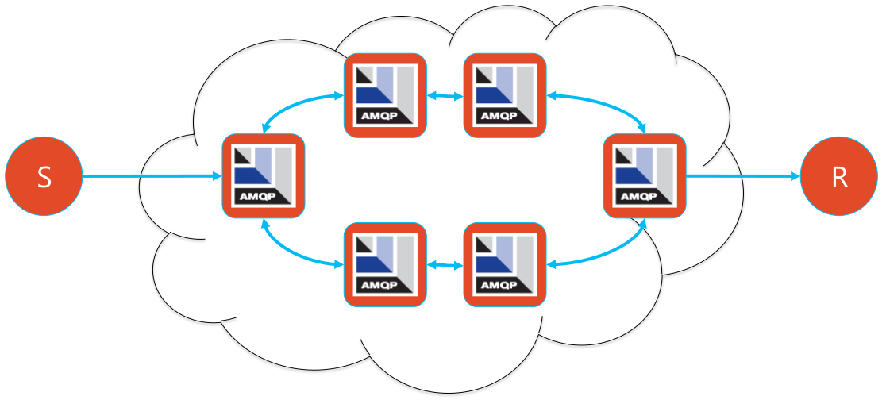

$ unzip amq-broker-7.2.0-bin.zipAMQ 7
Table of Contents
AMQ 7 新变化
RH AMQ 7 是红帽针对新架构下发布的企业级消息平台，主要亮点有以下三个方面:
-
轻量级 - 基于 ActiveMQ Artemis 构建 AMQ Broker，非常轻量级，整个安装包 50 MB
-
分布式能力 - AMQ Interconnect 是位于 AMQ Broker 和客户端之间，可提供分布式消息路由处理机制，构建高扩展消息网络。
-
客户端扩展 - 支持多种客户端，包括 Java Script, C++ 等
AMQ 7 基本操作
创建一个 Broker 实例
执行 artemis 命令创建 Broker 实例
$ cd amq-broker-7.2.0/
$ ./bin/artemis create ./instances/mybroker
Creating ActiveMQ Artemis instance at: /home/kylin/work/amq/amq-broker-7.2.0/instances/mybroker
--user: is a mandatory property!
Please provide the default username:
admin
--password: is mandatory with this configuration:
Please provide the default password:
--allow-anonymous | --require-login: is a mandatory property!
Allow anonymous access?, valid values are Y,N,True,False
Y
Auto tuning journal ...
done! Your system can make 31.25 writes per millisecond, your journal-buffer-timeout will be 32000
You can now start the broker by executing:
"/home/kylin/work/amq/amq-broker-7.2.0/instances/mybroker/bin/artemis" run
Or you can run the broker in the background using:
"/home/kylin/work/amq/amq-broker-7.2.0/instances/mybroker/bin/artemis-service" start-
使用用户名
admin，密码admin -
允许匿名登录
Broker instance 目录结构
instances/mybroker/
├── bin
│ ├── artemis
│ └── artemis-service
├── data
├── etc
│ ├── artemis.profile
│ ├── artemis-roles.properties
│ ├── artemis-users.properties
│ ├── bootstrap.xml
│ ├── broker.xml
│ ├── jolokia-access.xml
│ ├── logging.properties
│ ├── login.config
│ └── management.xml
├── lib
├── log
└── tmp运行 Broker
在 Broker 实例目录下运行 Broker 实例
$ cd instances/mybroker/
$ ./bin/artemis run命令行测试
1 - 打开新的命令行终端，运行消费者
$ ./bin/artemis consumer
Consumer:: filter = null
Consumer ActiveMQQueue[TEST], thread=0 wait until 1000 messages are consumed
Received 1000
Consumer ActiveMQQueue[TEST], thread=0 Consumed: 1000 messages
Consumer ActiveMQQueue[TEST], thread=0 Consumer thread finished2 - 打开新的命令行终端，运行生产者
$ ./bin/artemis producer
Producer ActiveMQQueue[TEST], thread=0 Started to calculate elapsed time ...
Producer ActiveMQQueue[TEST], thread=0 Produced: 1000 messages
Producer ActiveMQQueue[TEST], thread=0 Elapsed time in second : 4 s
Producer ActiveMQQueue[TEST], thread=0 Elapsed time in milli second : 4260 milli seconds|
Note
|
如上示例，生产者发送 1000 个消息到消费者，消费者消费 1000 个消息。 |
管理控制台
浏览器访问 http://localhost:8161/console/ 登录管理控制台。
以服务的方式运行
如果要使 AMQ Broker 以服务的方式在后台运行，执行
$ ./bin/artemis startQueue 配置
1 - 编辑 etc/broker.xml 创建 Queue
<address name="testQueue">
<anycast>
<queue name="testQueue"/>
</anycast>
</address>2 - 启动/重新启动 Broker
$ ./bin/artemis run3 - 启动消费者，指向新创建的 Queue
$ ./bin/artemis consumer --destination queue://testQueue --message-count 5
Consumer:: filter = null
Consumer ActiveMQQueue[testQueue], thread=0 wait until 5 messages are consumed
Consumer ActiveMQQueue[testQueue], thread=0 Consumed: 5 messages
Consumer ActiveMQQueue[testQueue], thread=0 Consumer thread finished4 - 启动生产者，指向新创建的 Queue
$ ./bin/artemis producer --destination queue://testQueue --message-count 5
Producer ActiveMQQueue[testQueue], thread=0 Started to calculate elapsed time ...
Producer ActiveMQQueue[testQueue], thread=0 Produced: 5 messages
Producer ActiveMQQueue[testQueue], thread=0 Elapsed time in second : 0 s
Producer ActiveMQQueue[testQueue], thread=0 Elapsed time in milli second : 46 milli secondsTopic 配置
1 - 编辑 etc/broker.xml 创建 Topic
<address name="testTopic">
<multicast>
<queue name="testTopic"/>
</multicast>
</address>2 - 启动/重新启动 Broker
$ ./bin/artemis run3 - 启动消费者，指向新创建的 Topic
$ ./bin/artemis consumer --destination topic://testTopic --message-count 10
Consumer:: filter = null
Consumer ActiveMQTopic[testTopic], thread=0 wait until 10 messages are consumed
Consumer ActiveMQTopic[testTopic], thread=0 Consumed: 10 messages
Consumer ActiveMQTopic[testTopic], thread=0 Consumer thread finished4 - 启动生产者，指向新创建的 Topic
$ ./bin/artemis producer --destination topic://testTopic --message-count 10
Producer ActiveMQTopic[testTopic], thread=0 Started to calculate elapsed time ...
Producer ActiveMQTopic[testTopic], thread=0 Produced: 10 messages
Producer ActiveMQTopic[testTopic], thread=0 Elapsed time in second : 0 s
Producer ActiveMQTopic[testTopic], thread=0 Elapsed time in milli second : 65 milli secondsQueue 安全
1 - 创建一个新用户 myuser，密码为 mypassword，关联角色 mygroup：
$ ./bin/artemis user add --user myuser --password mypassword --role mygroup2 - 编辑 etc/broker.xml，使 mygroup 具有发送消息的功能
<security-settings>
<security-setting match="#">
<permission type="createNonDurableQueue" roles="amq"/>
<permission type="deleteNonDurableQueue" roles="amq"/>
<permission type="createDurableQueue" roles="amq"/>
<permission type="deleteDurableQueue" roles="amq"/>
<permission type="createAddress" roles="amq"/>
<permission type="deleteAddress" roles="amq"/>
<permission type="consume" roles="amq"/>
<permission type="browse" roles="amq"/>
<permission type="send" roles="amq,mygroup"/>
<!-- we need this otherwise ./artemis data imp wouldn't work -->
<permission type="manage" roles="amq"/>
</security-setting>
</security-settings>3 - 启动/重新启动 Broker
$ ./bin/artemis run4 - 使用 myuser 发送消息到 testQueue
$ ./bin/artemis producer --destination topic://testQueue --message-count 10 --user myuser --password mypassword
Producer ActiveMQTopic[testQueue], thread=0 Started to calculate elapsed time ...
Producer ActiveMQTopic[testQueue], thread=0 Produced: 10 messages
Producer ActiveMQTopic[testQueue], thread=0 Elapsed time in second : 0 s
Producer ActiveMQTopic[testQueue], thread=0 Elapsed time in milli second : 32 milli seconds5 - 使用 myuser 用户从 testQueue 接收消息
$ ./bin/artemis consumer --destination topic://testQueue --message-count 10 --user myuser --password mypassword
Consumer:: filter = null
Consumer ActiveMQTopic[testQueue], thread=0 wait until 10 messages are consumed
javax.jms.JMSSecurityException: AMQ119213: User: myuser does not have permission='CREATE_NON_DURABLE_QUEUE' for queue f29afc6b-beb6-4de0-b11e-2e92be2b76cd on address testQueue
at org.apache.activemq.artemis.core.protocol.core.impl.ChannelImpl.sendBlocking(ChannelImpl.java:423)
at org.apache.activemq.artemis.core.protocol.core.impl.ChannelImpl.sendBlocking(ChannelImpl.java:319)
at org.apache.activemq.artemis.core.protocol.core.impl.ActiveMQSessionContext.createQueue(ActiveMQSessionContext.java:671)
at org.apache.activemq.artemis.core.client.impl.ClientSessionImpl.internalCreateQueue(ClientSessionImpl.java:1925)
at org.apache.activemq.artemis.core.client.impl.ClientSessionImpl.createTemporaryQueue(ClientSessionImpl.java:472)
at org.apache.activemq.artemis.jms.client.ActiveMQSession.createTemporaryQueue(ActiveMQSession.java:1175)
at org.apache.activemq.artemis.jms.client.ActiveMQSession.createConsumer(ActiveMQSession.java:751)
at org.apache.activemq.artemis.jms.client.ActiveMQSession.createConsumer(ActiveMQSession.java:374)
at org.apache.activemq.artemis.jms.client.ActiveMQSession.createConsumer(ActiveMQSession.java:346)
at org.apache.activemq.artemis.cli.commands.messages.ConsumerThread.consume(ConsumerThread.java:177)
at org.apache.activemq.artemis.cli.commands.messages.ConsumerThread.run(ConsumerThread.java:67)
Caused by: ActiveMQSecurityException[errorType=SECURITY_EXCEPTION message=AMQ119213: User: myuser does not have permission='CREATE_NON_DURABLE_QUEUE' for queue f29afc6b-beb6-4de0-b11e-2e92be2b76cd on address testQueue]
... 11 more
Consumer ActiveMQTopic[testQueue], thread=0 Consumer thread finished6 - 使用 admin 用户从 testQueue 接收消息
$ ./bin/artemis consumer --destination topic://testQueue --message-count 10 --user admin --password admin
Consumer:: filter = null
Consumer ActiveMQTopic[testQueue], thread=0 wait until 10 messages are consumed
Consumer ActiveMQTopic[testQueue], thread=0 Consumed: 10 messages
Consumer ActiveMQTopic[testQueue], thread=0 Consumer thread finishedBroker 高可用
1 - 创建两个 Broker 实例
$ ./bin/artemis create --user admin --password password --role admin --allow-anonymous y --clustered --host 127.0.0.1 --cluster-user clusterUser --cluster-password clusterPassword --max-hops 1 ./instances/broker1
$ ./bin/artemis create --user admin --password password --role admin --allow-anonymous y --clustered --host 127.0.0.1 --cluster-user clusterUser --cluster-password clusterPassword --max-hops 1 --port-offset 100 ./instances/broker22 - 启动 broker1
$ cd instances/broker1/
$ ./bin/artemis run3 - 启动 broker2
$ cd instances/broker2/
$ ./bin/artemis run4 - 查看日志输出，Bridge 创建输出如下
2018-08-13 16:00:07,598 INFO [org.apache.activemq.artemis.core.server] AMQ221027: Bridge ClusterConnectionBridge@157c611c [name=$.artemis.internal.sf.my-cluster.e421018b-9ece-11e8-86b6-a0afbd08b916, queue=QueueImpl[name=$.artemis.internal.sf.my-cluster.e421018b-9ece-11e8-86b6-a0afbd08b916, postOffice=PostOfficeImpl [server=ActiveMQServerImpl::serverUUID=bdda1e9b-9ece-11e8-94bd-a0afbd08b916], temp=false]@226001f8 targetConnector=ServerLocatorImpl (identity=(Cluster-connection-bridge::ClusterConnectionBridge@157c611c [name=$.artemis.internal.sf.my-cluster.e421018b-9ece-11e8-86b6-a0afbd08b916, queue=QueueImpl[name=$.artemis.internal.sf.my-cluster.e421018b-9ece-11e8-86b6-a0afbd08b916, postOffice=PostOfficeImpl [server=ActiveMQServerImpl::serverUUID=bdda1e9b-9ece-11e8-94bd-a0afbd08b916], temp=false]@226001f8 targetConnector=ServerLocatorImpl [initialConnectors=[TransportConfiguration(name=artemis, factory=org-apache-activemq-artemis-core-remoting-impl-netty-NettyConnectorFactory) ?port=61716&host=127-0-0-1], discoveryGroupConfiguration=null]]::ClusterConnectionImpl@300983713[nodeUUID=bdda1e9b-9ece-11e8-94bd-a0afbd08b916, connector=TransportConfiguration(name=artemis, factory=org-apache-activemq-artemis-core-remoting-impl-netty-NettyConnectorFactory) ?port=61616&host=127-0-0-1, address=, server=ActiveMQServerImpl::serverUUID=bdda1e9b-9ece-11e8-94bd-a0afbd08b916])) [initialConnectors=[TransportConfiguration(name=artemis, factory=org-apache-activemq-artemis-core-remoting-impl-netty-NettyConnectorFactory) ?port=61716&host=127-0-0-1], discoveryGroupConfiguration=null]] is connectedQueue 高可用
1 - 在 broker1 和 broker2 总添加 clusteredQueue 配置
<address name="clusteredQueue">
<anycast>
<queue name="clusteredQueue" />
</anycast>
</address>2 - 启动/重新启动 broker1 和 broker2
$ ./bin/artemis run测试一：消费者连接不同的 broker
1 - broker1 连接消费者
$ ./bin/artemis consumer --message-count 5 --destination queue://clusteredQueue2 - broker2 连接消费者
$ ./bin/artemis consumer --message-count 5 --url tcp://localhost:61716 --destination queue://clusteredQueue3 - 发送 10 条消息到 broker1
$ ./bin/artemis producer --message-count 10 --destination queue://clusteredQueue测试二：负载均衡测试
1 - 发送 10 条消息到 broker1
$ ./bin/artemis producer --message-count 10 --destination queue://clusteredQueue2 - broker2 连接消费者
$ ./bin/artemis consumer --message-count 10 --url tcp://localhost:61716 --destination queue://clusteredQueue3 - broker1 连接消费者
$ ./bin/artemis consumer --message-count 10 --destination queue://clusteredQueue测试三：STRICT 策率测试
修改 etc/broker.xml，配置 message-load-balancing 为 STRICT，再次进行如上测试
<cluster-connections>
<cluster-connection name="my-cluster">
<connector-ref>artemis</connector-ref>
<message-load-balancing>STRICT</message-load-balancing>
<max-hops>1</max-hops>
<discovery-group-ref discovery-group-name="dg-group1"/>
</cluster-connection>
</cluster-connections>Broker 集群主备共享存储
1 - 创建 live broker
$ ./bin/artemis create --shared-store --failover-on-shutdown --data ./instances/liveBroker/data --user admin --password password --role admin --allow-anonymous y --clustered --host 127.0.0.1 --cluster-user clusterUser --cluster-password clusterPassword --max-hops 1 ./instances/liveBroker
Creating ActiveMQ Artemis instance at: /home/kylin/work/amq/amq-broker-7.2.0/instances/liveBroker
Auto tuning journal ...
done! Your system can make 31.25 writes per millisecond, your journal-buffer-timeout will be 32000
You can now start the broker by executing:
"/home/kylin/work/amq/amq-broker-7.2.0/instances/liveBroker/bin/artemis" run
Or you can run the broker in the background using:
"/home/kylin/work/amq/amq-broker-7.2.0/instances/liveBroker/bin/artemis-service" start2 - 创建 backup broker
$ ./bin/artemis create --shared-store --failover-on-shutdown --slave --data ./instances/liveBroker/data --user admin --password password --role admin --allow-anonymous y --clustered --host 127.0.0.1 --cluster-user clusterUser --cluster-password clusterPassword --max-hops 1 --port-offset 100 ./instances/backupBroker
Creating ActiveMQ Artemis instance at: /home/kylin/work/amq/amq-broker-7.2.0/instances/backupBroker
Auto tuning journal ...
done! Your system can make 31.25 writes per millisecond, your journal-buffer-timeout will be 32000
You can now start the broker by executing:
"/home/kylin/work/amq/amq-broker-7.2.0/instances/backupBroker/bin/artemis" run
Or you can run the broker in the background using:
"/home/kylin/work/amq/amq-broker-7.2.0/instances/backupBroker/bin/artemis-service" start3 - 在 liveBroker 和 backupBroker 上添加 clusteredQueue 配置
<address name="clusteredQueue">
<anycast>
<queue name="clusteredQueue" />
</anycast>
</address>4 - 启动 live broker
$ cd instances/liveBroker/ && ./bin/artemis run5 - 启动 backup broker
$ cd instances/backupBroker/ && ./bin/artemis run6 - 查看 backup broker 日志
2018-08-13 16:41:17,411 INFO [org.apache.activemq.artemis.core.server] AMQ221032: Waiting to become backup node
2018-08-13 16:41:17,411 INFO [org.apache.activemq.artemis.core.server] AMQ221033: ** got backup lock
...
2018-08-13 16:41:22,721 INFO [org.apache.activemq.artemis.core.server] AMQ221031: backup announced7 - 强制停止 live broker，确认 backup broker 是否 live 上线
2018-08-13 16:44:22,763 INFO [org.apache.activemq.artemis.core.server] AMQ221010: Backup Server is now liveBroker 集群主备状态复制
1 - 创建 live broker
$ ./bin/artemis create --replicated --failover-on-shutdown --user admin --password password --role admin --allow-anonymous y --clustered --host 127.0.0.1 --cluster-user clusterUser --cluster-password clusterPassword --max-hops 1 ./instances/repLiveBroker2 - 创建 backup broker
$ ./bin/artemis create --replicated --failover-on-shutdown --slave --user admin --password password --role admin --allow-anonymous y --clustered --host 127.0.0.1 --cluster-user clusterUser --cluster-password clusterPassword --max-hops 1 --port-offset 100 ./instances/repBackupBroker3 - 在 repLiveBroker 和 repBackupBroker 上添加 haQueue 配置
<address name="haQueue">
<anycast>
<queue name="haQueue" />
</anycast>
</address>4 - 启动 live broker
$ cd instances/repLiveBroker
$ ./bin/artemis run5 - 启动 backup broker
$ cd instances/repBackupBroker/
$ ./bin/artemis run6 - 查看 Backup broker 日志
2018-08-13 17:12:45,448 INFO [org.apache.activemq.artemis.core.server] AMQ221024: Backup server ActiveMQServerImpl::serverUUID=f151bb01-9ed8-11e8-8632-a0afbd08b916 is synchronized with live-server.
2018-08-13 17:12:49,651 INFO [org.apache.activemq.artemis.core.server] AMQ221031: backup announced7 - 查看 Live broker 日志
2018-08-13 17:12:45,022 INFO [org.apache.activemq.artemis.core.server] AMQ221025: Replication: sending AIOSequentialFile:/home/kylin/work/amq/amq-broker-7.2.0/instances/repLiveBroker/data/journal/activemq-data-2.amq (size=10,485,760) to replica.
2018-08-13 17:12:45,271 INFO [org.apache.activemq.artemis.core.server] AMQ221025: Replication: sending NIOSequentialFile /home/kylin/work/amq/amq-broker-7.2.0/instances/repLiveBroker/data/bindings/activemq-bindings-4.bindings (size=1,048,576) to replica.
2018-08-13 17:12:45,282 INFO [org.apache.activemq.artemis.core.server] AMQ221025: Replication: sending NIOSequentialFile /home/kylin/work/amq/amq-broker-7.2.0/instances/repLiveBroker/data/bindings/activemq-bindings-2.bindings (size=1,048,576) to replica.8 - 强制关闭 Live broker，查看 Backup broker 日志
2018-08-13 17:16:02,380 INFO [org.apache.activemq.artemis.core.server] AMQ221007: Server is now live9 - 修改 Live broker etc/broker.xml，配置 Master replication
<ha-policy>
<replication>
<master>
<check-for-live-server>true</check-for-live-server>
</master>
</replication>
</ha-policy>10 - 重起 live broker
$ ./bin/artemis run
...
2018-08-13 17:22:27,404 INFO [org.apache.activemq.artemis.core.server] AMQ221031: backup announced11 - 配置 Backup Broker replication
<ha-policy>
<replication>
<slave>
<allow-failback>true</allow-failback>
</slave>
</replication>
</ha-policy>12 - 重起 Backup Broker
$ ./bin/artemis run
...
2018-08-13 17:25:37,113 INFO [org.apache.activemq.artemis.core.server] AMQ221031: backup announcedAMQP 集成
AMQP 主要用于跨系统集成，允许业务模块跨多种平台，并降低力业务应用开发的复杂性。常见的 AMQP 使用拓扑图如下：

-
AMQP 网络提供分布式、大消息量的处理能力
-
消息发送方可以是 Java、Python、.NET、PHP、JavaScript 等
-
消息接收方也可以是 Java、Python、.NET、PHP、JavaScript 等
本部分为了便利性，AMQP 网络只有一个 Broker，消息发送方使用 Nodejs，消息接收方使用 Java。
Broker 配置
1 - 创建新 Broker
$ ./bin/artemis create --user admin --password admin --role admin --allow-anonymous y ./instances/broker12 - 编辑 etc/broker.xml, 添加 Queue